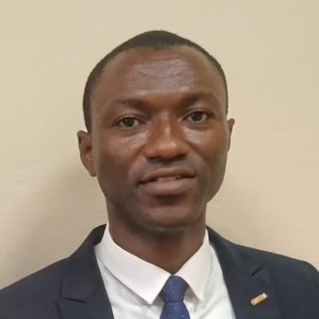

Oswell Paintsil
About me
I am a dedicated and solutions-oriented Mechanical Engineer with a Bachelor of Science in Mechanical Engineering from the University of Mines and Technology (UMaT) in Tarkwa, Ghana. My core expertise lies in the design, analysis, and optimization of complex mechanical systems, with a specialized focus on heating, ventilation, and air conditioning (HVAC) systems, thermal dynamics, and fluid mechanics. I am proficient in utilizing advanced modeling and simulation software to create efficient, sustainable, and code-compliant designs that meet rigorous performance standards and client specifications.
Complementing my technical engineering foundation, I have fortified my skill set with a formal project management certification from BYU-Pathway Ensign College. This program provided me with a robust framework in Agile Project Management, Advanced Project Management methodologies, Supply Chain Management, and Quality Management. This unique combination of deep technical knowledge and managerial acumen allows me to bridge the critical gap between theoretical design and practical execution. I am equipped to not only develop innovative engineering solutions but also to oversee projects from conception through to completion, ensuring they are delivered on time, within budget, and to the highest quality benchmarks.
Beyond traditional engineering, I possess a strong passion for computational problem-solving and data analysis. I am highly proficient in a suite of programming languages and engineering software tools, and I derive significant satisfaction from leveraging technology to streamline processes and enhance productivity. Microsoft Excel, in particular, is a tool I have mastered; I consistently use its advanced functionalities to model complex scenarios, automate workflows, and perform intricate data analysis, making it an indispensable asset in my problem-solving toolkit.
My professional ethos is deeply rooted in a commitment to lifelong learning, leadership, and service. My experience as a full-time missionary for The Church of Jesus Christ of Latter-day Saints in the Nigeria Calabar Mission was formative, instilling in me a profound sense of discipline, cultural awareness, and a dedication to serving others. These values seamlessly translate into my professional life, where I strive to lead with integrity, foster collaborative environments, and contribute meaningfully to every team I join.
As a devoted husband and father of two, I am driven by a profound sense of responsibility and a desire to build a better future through engineering excellence. I am continuously seeking to apply my integrated knowledge of mechanical systems, project management, and data-driven analysis to develop impactful, innovative, and sustainable solutions that address real-world challenges.
Projects
- Nana Kwame Prempeh Villa - HVAC
- Rangoon - HVAC
- Madison - HVAC
- Ghana Police Church - HVAC